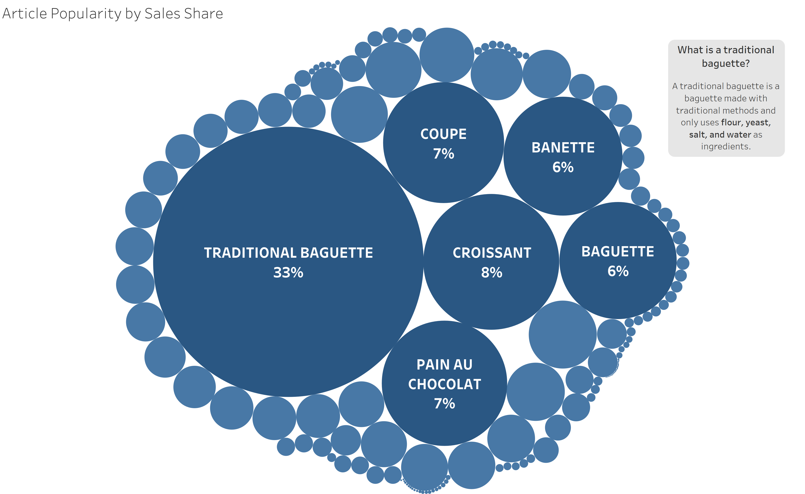

Assignment 4 - Spicy Bois French Bakery Role Play Report
Authors:
Brian Almaguer
Lukas Dolansky
Amrin Sandhar
Spicy Bois Bakery has been open for one year, and we are thrilled to have served a growing number of customers during that time.
In this report, we will share the results of our efforts and provide an overview of our most popular products and busiest months.
By analyzing this data, we hope to gain a better understanding of our customers' preferences and identify opportunities for growth in the coming year.
We hope that our unique and flavorful products will continue to attract new customers to Spicy Bois Bakery in the future.
In our first year of operation, we have been fortunate to serve a growing number of customers and expand our product line.
In this report, we will share the results of our efforts and provide an overview of our most popular products and busiest months.
By analyzing this data, we hope to gain a better understanding of our customers' preferences and identify opportunities for growth in the coming year.
Here is what we found!
What articles move the most volume?

Baguettes, both traditional and non-traditional, collectively account for 40% of all sales by volume!
The top six articles by sales volume have been marked in a darker color to distinguish them.
Pictured below is the same visualization with the top six articles excluded in order to provide a more balanced view of items that could be considered "side purchases" alongside the top performers.

From these two visualizations, it is abundantly clear that there are a few extremely dominant items, with the rest laying on the outskirts and only being picked up on occasion. This helps us figure out the relative demand for each item and adjust what quantity of ingredients to keep on hand for the production of these articles. In addition, these visualizations provide insight on how to create specials in which a less popular item can be paired with a more popular item to incentivize the purchase of items that don't move as much volume.
Analyzing Past Sales for Future Sales!
As the owner of a French bakery, I am always looking for ways to improve and grow my business.
That's why I've created this interactive graph, which allows me to analyze the sales data from my first year of operation.
By looking at the months and days of the week when my top-earning products were purchased the most, I can plan targeted sales
to encourage even more customers to purchase these items.
This will be a valuable tool as I enter my second year of running my bakery, and I'm excited to see how it will help me to continue to succeed.
To use my interactive graph, simply follow these steps:
- Select one of the six articles by clicking on its button to view its sales data.
- Use the check box system to filter the data by month. This will allow you to see how each article performed during specific months of the year.
- Use the mouse hover feature to see the day of the week and total sales in euros for each data point on the graph. This will give you a more detailed view of how each article performed on specific days.
Select the month(s) to view:
What was our rush hour?
For this visualization we wanted to know when during the day we have the highest volume of in revenue and transactions
We wanted to be able to target promotions to maximize revenue so with this we can see where to emphasize our focus.
The height of the circles are how much revenue was acquired in that hour in the year and the size of the ball is the
quantity of transactions in that hour for the year. The amount of transactions is significant because people can buy different things
and different amount if things so the total revenue and total transactions aren't directly related.

One of the key findings from our data analysis is the identification of a rush hour at 11am, as well as high traffic at 10am and 12pm.
This information is reflected in the graph that shows the revenue and number of transactions by hour. By incorporating this knowledge into
our plans, we will be better able to serve our customers and optimize our operations. We are also considering ways to increase traffic during
the slower times of the day, such as 2pm and 3pm.
Conclusion
In conclusion, our analysis of the data we have collected over the past year has revealed some interesting insights into our customers' preferences and behavior.
We have identified our busiest months and rush hours, as well as our most popular products.
By presenting these findings in the form of graphs and charts, we hope to provide a clear and concise picture of our business and its performance.
Overall, we are pleased with the success we have achieved in our first year of operation, and we are excited to continue growing and serving our loyal customers.
We will use the information from this report to inform our decision-making and planning for the coming year, and we look forward to seeing what the future holds for the Spicy Bois Bakery.
The following theoretical French Barker dataset we used to roleplay as a the Spice Bois Bakery is available for download here from kaggle.